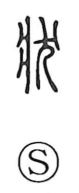

状

Uncategorized
Kun: | On: jo
state ・ condition ・ appearance ・ document ・ card
Explanation
Originally written 狀, this is a phono-semantic character. The component 爿 serves as the phonetic and pictures the upright board used in rammed-earth construction (hanchiku), while 犬 represents a dog offered in a foundation rite. The graph thus evokes the ritual by which a new wall or building was solemnly fixed, and from that sense of determining a structure’s state it came to mean the present condition or anticipated aspect of things—their look or figure (as in a person’s countenance). By further extension it also came to denote a written note or document, and a tag or plate.